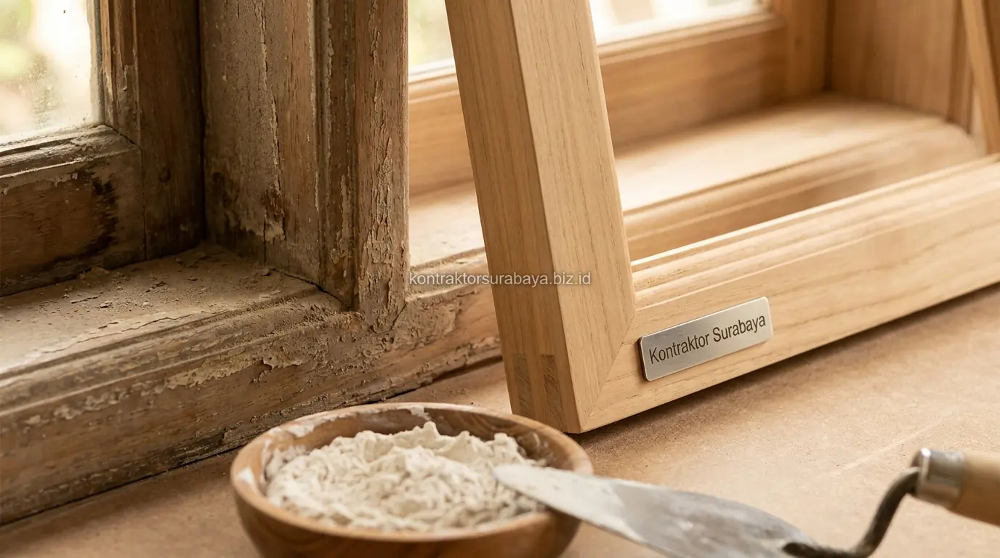
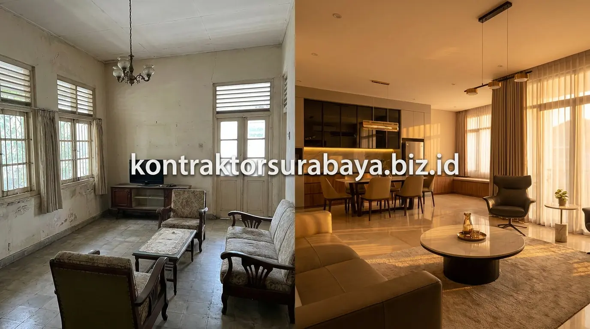

Surabaya kaya akan peninggalan arsitektur kolonial era Hindia Belanda yang tersebar di kawasan bersejarah seperti Jalan Rajawali, Jembatan Merah, Veteran, hingga perumahan era 1920-an di Darmo dan Gubeng. Banyak pemilik bangunan pusaka kini berkeinginan meremajakan gedung mereka menjadi hunian tinggal privat, galeri seni, kantor firma, maupun kafe heritage komersial yang bernilai prestise tinggi.
Namun, merenovasi bangunan cagar budaya bukanlah pekerjaan konstruksi konvensional yang bisa dilakukan secara sembarangan. Dibutuhkan keahlian restorasi khusus bersama tim jasa renovasi bangunan Surabaya dan tim jasa arsitek profesional agar perbaikan kekuatan struktur tidak merusak karakter visual, integritas material kuno, maupun regulasi cagar budaya yang mengikatnya.
1. Kenapa Renovasi Bangunan Cagar Budaya Berbeda dari Renovasi Biasa?
Renovasi bangunan cagar budaya tidak hanya mempertimbangkan aspek fungsional dan estetika, tetapi juga keharusan mempertahankan nilai sejarah dan orisinalitas yang menjadi alasan bangunan tersebut dilindungi oleh undang-undang. Pada bangunan baru, kontraktor bebas membongkar dinding bata atau mengganti jenis jendela sesuka hati pemilik.
Sebaliknya, pada bangunan pusaka kolonial, setiap jengkal elemen arsitektur—mulai dari lis profil gipsum, rooster ventilasi keramik, hingga engsel kuningan kuno—merupakan artefak sejarah berharga. Intervensi renovasi harus mengusung prinsip kehati-hatian (minimum intervention) dan sifatnya dapat dikembalikan ke wujud semula (reversibility) apabila di masa mendatang ditemukan teknik konservasi yang lebih baik.
2. Aspek yang Perlu Dipertahankan pada Bangunan Kolonial Bernilai Sejarah
Fasad asli beserta ornamennya, proporsi jendela dan pintu, material dinding asli apabila memungkinkan, dan detail atap atau kusen khas periode bangunan adalah empat aspek utama yang wajib dipertahankan:
- Fasad Utama dan Siluet Atap: Fasad depan bergaya Indische Empire, Art Deco, atau Nieuwe Bouwen menjadi identitas visual utama yang membedakan bangunan kolonial dari bangunan modern di sekitarnya. Karakter atap pelana tinggi atau perisai mansard tidak boleh dipotong atau diratakan.
- Proporsi Jendela dan Pintu Tinggi: Karakteristik bukaan kolonial yang menjulang tinggi (mencapai 2,8 hingga 3,5 meter) dengan daun jendela ganda (kisi-kisi kayu jalusi krepyak di luar dan kaca di dalam) merupakan sistem pendinginan pasif alami yang wajib dilestarikan.
- Dinding Bata Merah Spesi Kapur: Dinding tebal 1 bata utuh (ketebalan 25–30 cm) tanpa kolom praktis beton bertulang harus dijaga agar tidak retak struktur akibat getaran alat berat modern.
- Detail Ornamen Klasik: Kaca patri warna (stained glass), tegel motif kunci kuno, talang seng tembaga, dan lisplang kayu ukir profil yang menjadi saksi kemegahan arsitektur masa lampau.

3. Teknik Perbaikan Struktur Tanpa Mengubah Tampilan Asli
Perkuatan struktur dari sisi dalam, seperti penambahan rangka penguat baja tersembunyi yang tidak terlihat dari luar, memungkinkan perbaikan kekuatan bangunan tanpa mengubah tampilan fasad yang menjadi nilai sejarah utamanya.
Pendekatan ini memerlukan perencanaan teknik sipil yang jauh lebih matang dibanding konstruksi baru. Bila fondasi batu kali mengalami penurunan akibat tanah lunak Surabaya, kontraktor mengaplikasikan metode penyuntikan cairan semen khusus (grouting) atau pemasangan tiang pancang mikro (micropiles) di titik-titik dalam ruangan tanpa merusak dinding bata eksterior. Rangka kuda-kuda atap kayu yang mulai rapuh diperkuat dengan pelat baja sisip internal (flitch plate) yang tertanam rapi di dalam balok kayu jati sehingga tidak mengubah estetika plafon terbuka.
4. Material Pengganti yang Kompatibel dengan Material Bangunan Lama
Kapur atau semen dengan komposisi mendekati material asli, kayu sejenis untuk kusen yang rusak, cat dengan warna dan tekstur serupa, dan genteng atau atap replika adalah empat jenis material pengganti yang kompatibel dengan material bangunan kolonial lama:
| Elemen Arsitektur | Material Asli Kolonial | Material Kompatibel Restorasi | Material yang DILARANG |
|---|---|---|---|
| Plesteran Dinding | Spesi kapur tohor dan pasir kali halus | ✅ Mortar kapur hidrolik alami (NHL) berpori | ❌ Acian semen portland murni rapat air |
| Kusen & Daun Jendela | Kayu jati tua solid Jawa (Teak wood) | ✅ Kayu jati lawasan / jati TPK kelas I oven | ❌ Kusen aluminium modern / UPVC |
| Lapisan Cat Dinding | Cat kapur alami (limewash) tanpa film | ✅ Cat silikat mineral mikroporous bernapas | ❌ Cat minyak enamel / cat lateks waterproof kedap uap |
| Penutup Atap Genteng | Genteng kodok tanah liat / vlaamsche | ✅ Genteng tanah liat bakar tradisional seukuran | ❌ Seng spandek gelombang / atap aspal modern |
| Lantai Ruangan | Tegel semen motif klasik / teraso cor | ✅ Tegel motif cetak tangan (encaustic cement tile) | ❌ Granit tile kilap ukuran 80x80 modern |
Perhitungan estimasi pengadaan material restorasi langka dan upah pengrajin ukir kayu khusus dapat Anda diskusikan melalui layanan RAB & estimasi biaya transparan kami.
5. Koordinasi dengan Instansi Cagar Budaya Sebelum Renovasi Dimulai
Koordinasi dengan instansi terkait yang menangani cagar budaya di Surabaya diperlukan sebelum renovasi dimulai, terutama apabila bangunan telah tercatat secara resmi dalam Surat Keputusan (SK) Walikota sebagai Bangunan Cagar Budaya (BCB) Golongan A, B, atau C.
Setiap kategori golongan cagar budaya memiliki batasan intervensi yang berbeda:
- Cagar Budaya Golongan A: Dilarang keras membongkar, mengubah bentuk atap, denah struktur, atau ornamen fasad. Renovasi murni berupa pemeliharaan dan restorasi sesuai wujud aslinya.
- Cagar Budaya Golongan B: Fasad eksterior wajib dipertahankan utuh, namun penataan tata letak interior (layout ruangan) diperbolehkan mengalami adaptasi fungsi modern selama tidak merusak kestabilan struktur utama.
- Cagar Budaya Golongan C: Penyesuaian tampak lingkungan sekitar dimungkinkan, dengan tetap menjaga keselarasan langgam arsitektur kawasan bersejarah.
Tim arsitek kami siap mendampingi pemilik gedung dalam menyusun Dokumen Kajian Teknis Pemugaran untuk diajukan ke Tim Ahli Cagar Budaya (TACB) Kota Surabaya hingga izin resmi terbit.
6. Tantangan Teknis yang Sering Ditemukan pada Renovasi Bangunan Kolonial
Berdasarkan pengalaman lapangan tim konservasi Kontraktor Surabaya, empat tantangan teknis paling berat yang sering dijumpai saat membongkar bangunan kolonial antara lain:
- Pondasi Batu Kali Mengalami Pelapukan: Pengikisan mortar kapur akibat naiknya air tanah (rising damp) selama puluhan tahun menyebabkan pasangan batu kali kehilangan daya ikat.
- Rangka Kayu Dimakan Rayap Tanah: Balok kuda-kuda, gording, dan reng kayu jati seringkali keropos di bagian yang tertanam dalam dinding atau tersembunyi di atas plafon rapat.
- Jalur Kabel Listrik Tua Berbahaya: Instalasi kabel berselubung kain lawas yang rapuh berisiko tinggi memicu korsleting kebakaran sehingga wajib diganti total dengan pipa konduit PVC tahan api standar SNI.
- Kelembapan Tinggi Dinding Tebal: Penggunaan plester semen modern pada renovasi terdahulu justru menjebak air tanah di dalam dinding, mengakibatkan cat menggelembung dan dinding lapuk hancur seperti pasir.
7. Kesalahan Umum yang Merusak Nilai Sejarah saat Renovasi Bangunan Kuno
Banyak bangunan peninggalan Belanda yang kehilangan nilainya karena kelalaian pelaksana yang memperlakukan bangunan bersejarah seperti ruko modern baru:
- Mengganti Jendela Kayu dengan Aluminium Modern: Membongkar kusen jati tebal dan menggantinya dengan profil aluminium powder coating tipis, merusak proporsi fasad klasik secara instan.
- Melapisi Fasad Batu Alam dengan ACP atau Keramik Mengkilap: Menutup dinding kolonial bertekstur dengan panel aluminium composite (ACP) warna mencolok demi kesan 'kekinian', menghilangkan status cagar budaya dan nilai jual pusakanya.
- Meratakan Plafon Menjadi Gypsum Datar Polos: Menghilangkan ekspos balok kayu atau ornamen roset gipsum klasik peninggalan asli Belanda.
- Tidak Melibatkan Tenaga Ahli Restorasi Bersertifikat: Mempercayakan renovasi kepada pemborong umum yang tidak memahami karakteristik kimiawi spesi kapur dan perilaku mekanis bangunan tanpa beton bertulang.
"Merestorasi bangunan kuno cagar budaya adalah seni memadukan rasa hormat pada masa lalu dengan kepiawaian teknik masa kini. Keberhasilan renovasi terwujud saat gedung kembali kokoh berdiri tanpa kehilangan satu pun jiwa historis di dalamnya." — Erlang Sinatrya, Lead Project Engineer Kontraktor Surabaya
Renovasi bangunan cagar budaya memerlukan pendekatan yang berbeda dari renovasi bangunan biasa, sehingga konsultasi mendalam dengan tim yang berpengalaman menjadi langkah penting sebelum pekerjaan fisik dimulai. Pelajari rekam jejak dan kapabilitas kami pada halaman jasa renovasi bangunan, kenali lebih jauh tim profesional kami di halaman tentang kami, serta temukan ragam portofolio proyek restorasi lainnya pada halaman galeri proyek dan layanan konstruksi terpadu kami.
